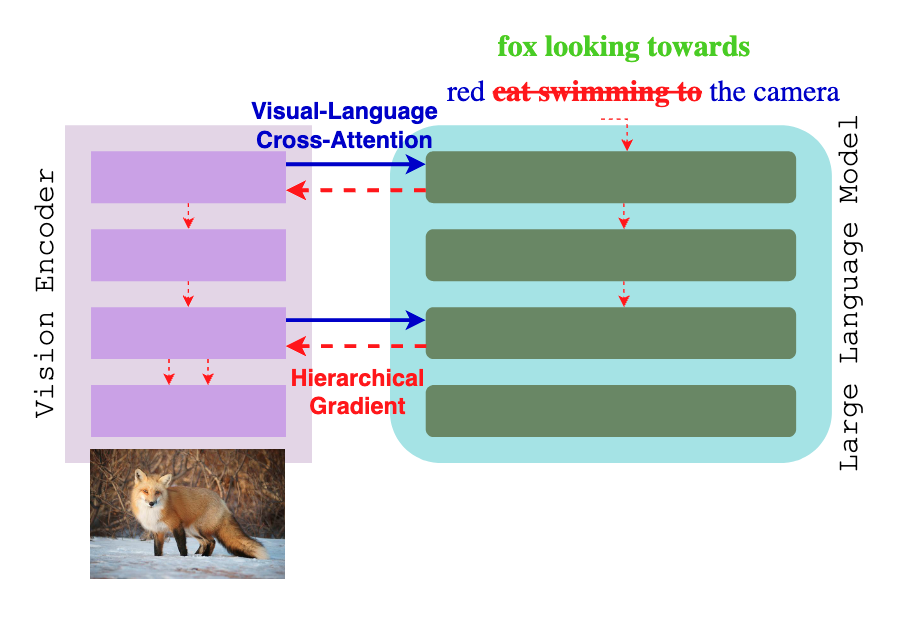
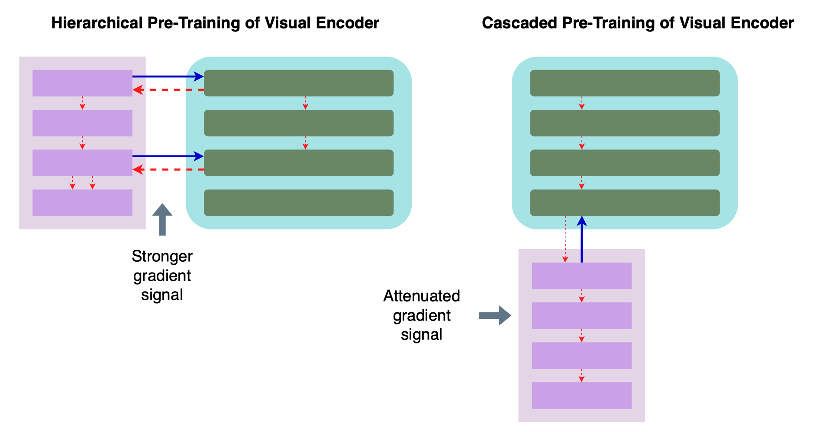
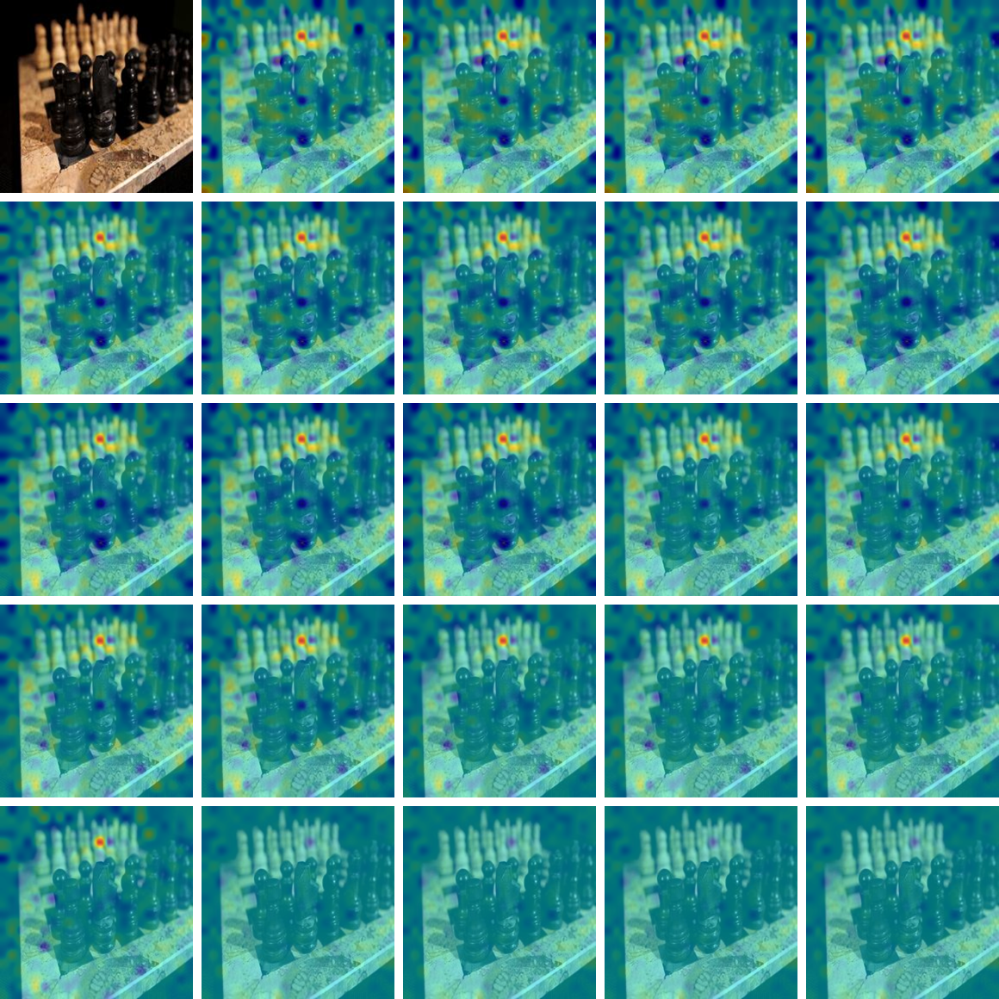
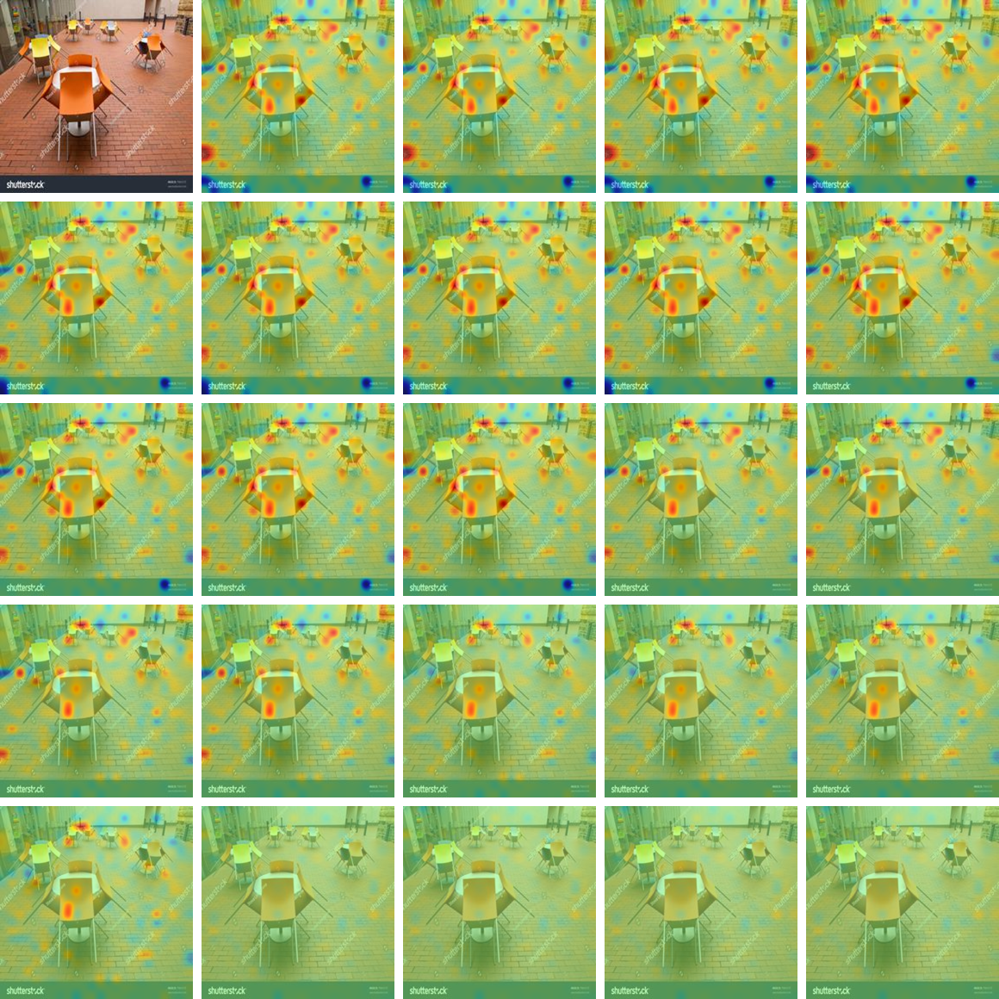
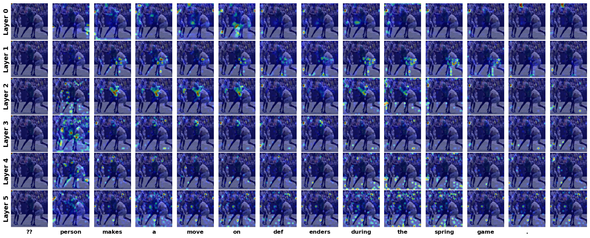

Abstract
The field of computer vision has experienced significant advancements through scalable vision encoders and multimodal pre-training frameworks. However, existing approaches often treat vision encoders and large language models (LLMs) as independent modules, limiting the integration of hierarchical visual features. In this work, we propose HIVE (Hierarchical Pre-Training of Vision Encoders), a novel framework that enhances vision-language alignment by introducing hierarchical cross-attention between the vision encoder and LLM. Unlike conventional methods that flatten image embeddings, HIVE enables structured feature fusion across multiple layers, improving gradient flow and representation learning. To optimize this interaction, we introduce a three-stage training strategy that progressively aligns the vision encoder with the LLM, ensuring stable optimization and effective multimodal fusion. Empirical evaluations demonstrate that HIVE achieves superior performance not only in image classification but also on various vision-language tasks, outperforming self-attention-based methods in benchmarks such as MME, GQA, OK-VQA, and ScienceQA. Our results highlight the benefits of hierarchical feature integration, paving the way for more efficient and expressive vision-language models.
System Overview

Instead of feeding flattened image embeddings directly into the input layer of large language models, HIVE establishes a multi-layered cross-attention interface. We define a selection subset of the vision encoder depths and map them via a lightweight projector. The LLM then attends to these intermediate vision features directly. By physically routing intermediate vision features to intermediate LLM layers, we force the vision encoder to preserve low-level structural data in its early layers, and abstract semantics in its deeper layers, directly supervised by the LLM's language modeling loss.
Hierarchical vs. Cascaded Pre-Training

Main Quantitative Results
We evaluate HIVE against self-attention (SA) baselines on standard vision-language benchmarks using SigLIP. Following a rigorous three-stage pre-training method, HIVE consistently outperforms both the base models and the SA baselines, demonstrating that hierarchical feature integration significantly improves multimodal reasoning capabilities.
| Encoder | MME | GQA | OK-VQA | ScienceQA |
|---|---|---|---|---|
| Base (SigLIP) | 1296 | 57.74 | 48.78 | 62.34 |
| SA (Self-Attention) | 1263 | 57.69 | 46.19 | 59.56 |
| HIVE (Ours) | 1298 | 58.05 | 51.01 | 63.12 |
Superior Fine-Grained Classification
On pure vision tasks, HIVE showcases exceptional improvements on fine-grained benchmarks like Food-101 (96.56%) and Caltech-256 (97.33%), proving that multi-layered integration helps the encoder capture highly intricate visual details better than flat embeddings.
Massive Efficiency Gains
By limiting cross-modal interactions to a smaller subset of features (25% of layers), HIVE avoids the quadratic explosion of full self-attention.
| Metric | HIVE vs Baseline |
|---|---|
| Training Cost (TFLOPs) | 0.14× |
| Peak GPU Memory | -59.3% |
| Wall-Clock Time | 3.4× Faster |
Qualitative Analysis: Gradients & Attention
HIVE's structured gradient propagation contributes to enhanced stability during training and improved visual representation learning across complex scenes.
Gradient Flow Analysis


Attention Maps

Citation
@inproceedings{lee2026hierarchical,
title={Hierarchical Pre-Training of Vision Encoders with Large Language Models},
author={Lee, Eugene and Chang, Ting-Yu and Tsai, Jui-Huang and Diao, Jiajie and Lee, Chen-Yi},
booktitle={Proceedings of the IEEE/CVF Conference on Computer Vision and Pattern Recognition (CVPR)},
year={2026}
}